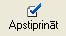
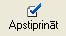
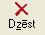

Pamatlīdzekļu ienākšanas dokuments¶
Pamatlīdzekļu ienākšanas dokuments jāveido ņemot uzskaitē jaunus pamatlīdzekļus. Dokuments pēc saglabāšanas tiek pievienots Pamatlīdzekļu dokumentu sarakstā . Pamatlīdzekļu ienākšanas dokumentu iespējams arī automatizēti ģenerēt no Iepirkumu dokumentu žurnāla (skat. zemāk Automātiska pamatlīdzekļu ienākšanas dokumenta izveide no iepirkuma dokumenta ), kas ir jāpapildina ar trūkstošo informāciju.
Pievienojot jaunu dokumentu jāizvēlas pamatlīdzekļu dokumenta veids Pamatlīdzekļu ienākšanas dokuments .

Numurs - jānorāda pamatlīdzekļa dokumenta numurs. Šis numurs strādājot ar sistēmu tiek piešķirts automātiski pēc iebūvētā numeratora . Visiem pamatlīdzekļu dokumentiem ir viena numerācija.
Datums - pamatlīdzekļu dokumenta izveidošanas datums.
Paskaidrojums - jānorāda dokumenta paskaidrojums.Šī informācijatiek rādīta pamatlīdzkļu uzskaites kartītē saimnieciskā darījuma aprakstā.
Līgums - iespēja norādīt līguma numuru.
Piegādātāja valsts - iespēja norādīt pamatlīdzekļu piegādātāja valsti.
Piegādātājs - iespēja norādīt pamatlīdzekļu piegādātāju.
Piezīmes - iespējams norādīt piezīmes par dokumentu un šīs piezīmes domātas tikai grāmatvedim. Pamatlīdzekļu atskaitēs šīs piezīmes netiek uzrādītas.
Saglabāt - pēc dokumenta datu un pamatlīdzekļu (skat. zemāk Pamatlīdzekļu pievienošana Pamatlīdzekļuienākšanas
dokumentam ) pievienošanas jāspiež šī poga lai saglabātu izveidoto dokumentu.
 Lai izveidotā Pamatlīdzekļuienākšanas
dokumenta dati stātos spēkā obligāti pēc saglabāšanas dokuments ir
jāapstiprina ar funkciju  .
Lai izveidotā Pamatlīdzekļuienākšanas
dokumenta dati stātos spēkā obligāti pēc saglabāšanas dokuments ir
jāapstiprina ar funkciju  .
{kind=link}
Pēc dokumenta apstiprināšanas Pamatlīdzekļu
ienākšanasdokuments ir jānogrāmato .
Pamatlīdzekļu pievienošana Pamatlīdzekļuienākšanas dokumentam¶
Pēc dokumenta datu aizpildīšanas ir jāaizpilda dati par pamatlīdzekļiem. Dokumentam jaunu pamatlīdzekli pievieno atvērtā
Pamatlīdzekļuienākšanas dokumenta formā ar funkciju
 .
.
Datus par pamatlīdzekli iespējams labot atvērtā
Pamatlīdzekļuienākšanas dokumenta formā ar funkciju
 .
.
Pamatlīdzekli dzēš atvērtā Pamatlīdzekļu atlikumu ievades dokumenta formā ar funkciju  .
{kind=link}


Inventāra nr. - jānorāda pamatlīdzekļa inventāra numurs. Numurs sistēmā tiek pēc secības piešķirts automātiski nākošais, ko lietotājs var labot. Pamatlīdzekļu numurā var izmantot tikai ciparus.
Ien.dok.num. - Ienākošā dokumenta numurs ir informatīvs lauks un lietotājs to mainīt nevar.
Skaits - jānorāda pamatlīdzekļu skaits. Parasti šis skaits ir 1, ko sistēma arī automātiski piedāvā, bet, ja jāņem uzskaitē vairāki vienādi pamatlīdzekļi, tad šo skaitu ir iespējams labot un pēc kartiņas saglabāšanas sistēma uzģenerēs pēc norādītā skaita vienādas pamatlīdzekļu kartiņas piešķirot katrai savu unikālu inventāra numuru.
Inventāra nr. līdz -
Nosaukums - jānorāda pamatlīdzekļa nosaukums.
Apraksts - jānorāda detalizētāka informācija par pamatlīdzekli, ja nepieciešams (piem. detalizētāka atrašanās vieta, pamatlīdzekļa faktiskais lietotājs, utt.).
Nemateriālais aktīvs - šī izvēles rūtiņa ir jāatzīmē, ja pamatlīdzeklis ir nemateriālais aktīvs.
Tiek izmantots saimnieciskajā darbībā - šī izvēles rūtiņa jāatzīmē, ja pamatlīdzeklis tiek izmantots saimnieciskajā darbībā.
Iegādes dat. - jānorāda faktiskais iegādes datums.
Ieg. vērtība - jānorāda pamatlīdzekļa iegādes vērtība.
Īpašuma veids - jānorāda pamatlīdzekļa īpašuma veids .
Izsl.datums - šis lauks tiek aizpildīts automātiski pēc pamatlīdzekļa izslēgšanas un lietotājs to mainīt nevar.
Likvid.vērtība - jānorāda likvidācijas vērtība, ja tā ir vairāk nekā nulle.
Pamatl.piezīmes - iespējams norādīt piezīmes par pamatlīdzekli un šīs piezīmes domātas tikai grāmatvedim. Pamatlīdzekļu atskaitēs šīs piezīmes netiek uzrādītas.
Stājies ekspl. - jānorāda pamatlīdzekļa faktiskais stāšanās ekspluatācijā datums.
mēn. - jānorāda derīgās lietošanas mēneši. Šis lauks tiek aizpildīts automātiski pievienojot Pamatlīdzeklim kategoriju , bet lietotājam ir iespēja derīgās lietošanas mēnešu skaitu mainīt atbilstoši uzņēmumā noteiktajam laikam.
Der.liet.beig.dat. - šis lauks nav jāaizpilda un ir informatīvs. Dati tiek rādīti ņemot vērā Stājies ekspl. un mēn. norādītos datus.
Kategorija - jānorāda Pamatlīdzekļa kategorija . Caur Pamatlīdzekļu kategoriju pamatlīdzeklim tiek nodefinēts pamatlīdzekļa uzskaites konts, nolietojuma konts, izdevumu konts un derīgās lietošanas laiks.
Objekts - jānorāda pamatlīdzekļa objekts .
Dimensijas - iespēja norādīt uzņēmumā izmantojamo dimensiju vērtības (piem. ekonomiskās klasifikācijas kods, valdības funkcija, projekts, finansējums, utt.).
Struktūrv. - jānorāda struktūrvienība.
Atb.persona - jānorāda materiāli atbildīgā persona .
Uzsk.vērtība - jānorāda uzskaites vērtība finanšu vajadzībām un jānorāda uzskaites vērtība nodokļu vajadzībām.
Uzkr.noliet. - jānorāda uzkrātais nolietojums finanšu vajadzībām un uzkrātais nolietojums nodokļu vajadzībām uz datumu, kad tiek uzsākts darbs ar sistēmu.
Piegādātājs - iespēja norādīt pamatlīdzekļa Piegādātāju .
Līgums - iespēja norādīt līguma numuru.
Garantijas term. - iespēja norādīt pamatlīdzekļa garantijas termiņu.
Piegādātāja valsts - iespēja norādīt piegādātāja valsti.
Apdr.sabiedr. - iespēja norādīt Apdrošināšanas sabiedrību .
Max.atlīdzība - iespēja norādīt apdrošināšanas maksimālo atlīdzību.
Garantijas term. - iespēja norādīt maksimālās atlīdzības garantijas termiņu.
Pazīme - iespēja norādīt Pamatlīdzekļa pazīmi .
Platība - ja pamatlīdzeklis ir zeme vai nekustamais īpašums, tad ir iespēja norādīt platību.
Kadastra nr. - ja pamatlīdzeklis ir zeme vai nekustamais īpašums, tad ir iespēja norādīt kadastra numuru.
Saglabāt - jāspiež šī poga lai saglabātu ievadītos datus par pamatlīdzekli. Atcelt - jāspiež šī poga, ja lietotājs nevēlas saglabāt aizpildītos datus par pamatlīdzekli.
Automātiska pamatlīdzekļu ienākšanas dokumenta izveide no iepirkuma dokumenta +++++++++++++++++++++++++++++++
Iegādājoties jaunu pamatlīdzekli nepieciešams reģistrēt iepirkuma dokumentu iepirkumu dokumentu žurnālā norēķiniem ar kreditoriem. Daļa informācijas, kas tiek aizpildīta pievienojot iepirkuma dokumentu, nepieciešams aizpildīt arī pievienojot pamatlīdzekļu ienākšanas dokumentu. No iepirkuma dokumenta iespējams automatizēti uzģenerēt pamatlīdzekļu ienākšanas dokumentu ar pamatlīdzekļu kartiņām, kurām nepieciešams papildināt trūkstošo informāciju.
Aizpildot iepirkuma dokumenta saturu pazīme jānorāda Pamatlīdz.

Pēc visu pamatlīdzekļu pievienošanas iepirkumu dokumentam jāspiežkomanda Funkcijas un jāizvēlas funkcija Izveidot pamatlīdzekļu ienākšanas dokumentu.

Formā Pamatlīdzekļu ienākšanas dokumenta izveide jāpārbauda aizpildītā informācija. Ja aizpildītā informācija ir korekta, jāspiež poga Izveidot ienākšanas dokumentu . Ja aizpildītā informācija nav korekta, tad jāspiež poga Atcelt , jāveic korekcijas un vēlreiz jāveic iepriekš aprakstītās darbības.

Pēc pamatlīdzekļu dokumenta izveides sistēma paziņoPamatlīdzekļu ienākšanas dokumenta numuru.
Pēc pamatlīdzekļu automatizētas
izveidesPamatlīdzekļu ienākšanas dokumentā obligāti jāpapildina
trūkstošā informācija par pamatlīdzekļiem, kuri atrodas
Pamatlīdzekļu dokumentu žurnālā .
Lietotājam ir iespēja uzreiz atvērt Pamatlīdzekļu ienākšanas dokumentuapstiprinot, vai neapstiprināt un atvērtPamatlīdzekļu ienākšanas dokumentuvēlāk Pamatlīdzekļu dokumentu žurnālā .